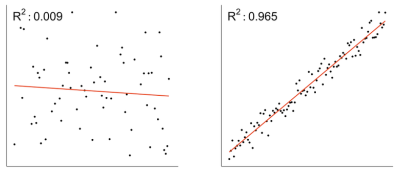
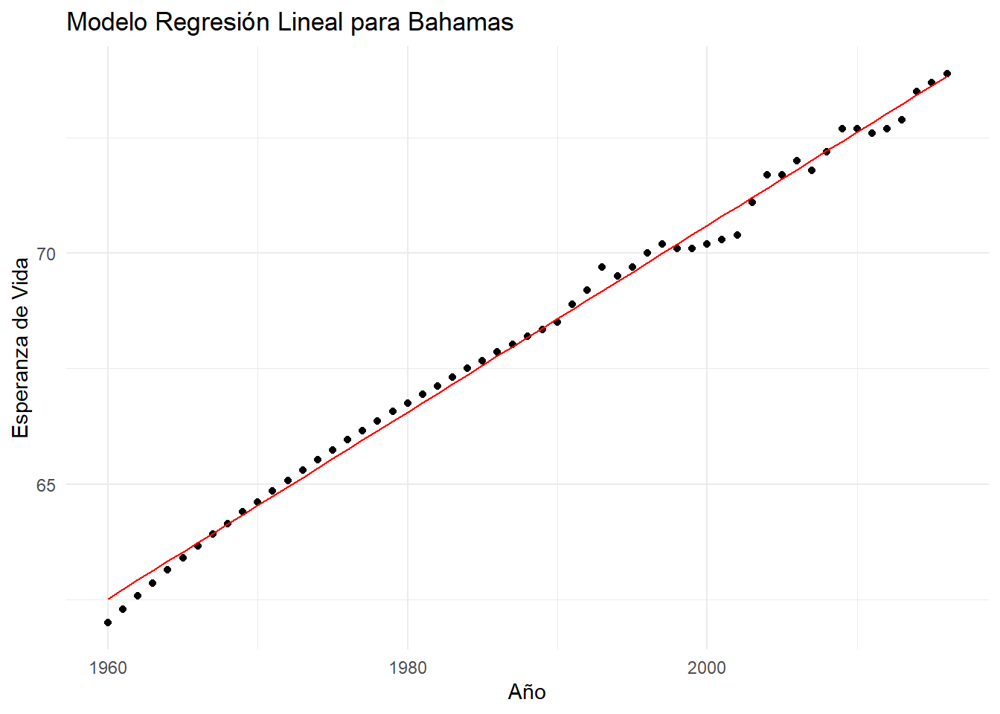
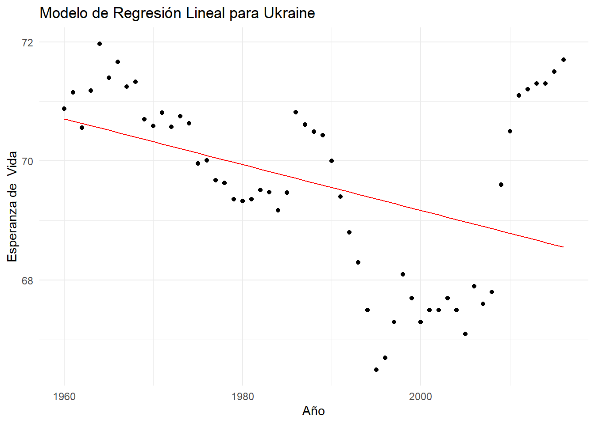
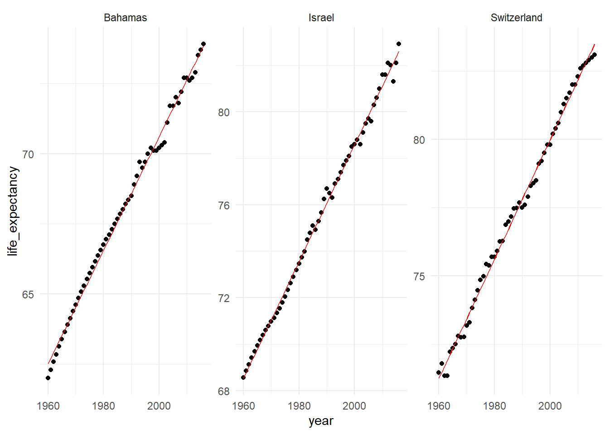
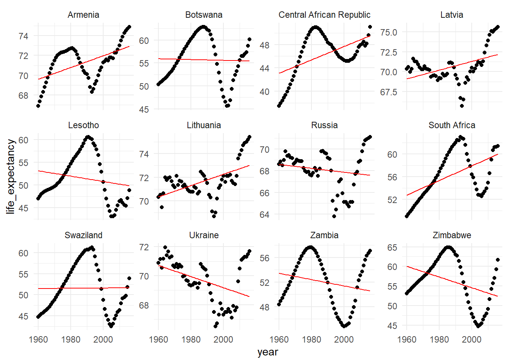

library(tidyverse) # para manipulación de datos
library(gapminder) # marco de datos que utilizaremos
library(dslabs) # conjunto de datos y funciones para analisis de datos
library(broom) # Resumen informacion sobre objetos estadisticos en tibblesMachine Learning en Tidyverse
Múltiples Modulos con broom
Machine Learning
Forecasting
R
RStudio
broom
Exploración de Coeficientes entre Modelos
Asumire que el lector tiene cierto conocimiento de la teoría de modelos lineales, en caso de no ser así, no te preocupes visita este link para que puedas ir a leer las generalidades de estos modelos y su uso en R, principalmente los tres paquetes de broom que le permiten explorar estos modelos. En este post trataremos de combinar estas técnica para aprender más sobre estos modelos y sus datos.
A continuación cargaremos algunos de los paquetes que nos ayudaran para poder realizar nuestra tarea,
Recuerde que el marco de gapminder contiene informacion sobbre cada país desde 1960 hasta 2016. Crearemos una variable que llamaremos gap_anidado para obtener que las características de cada país este anidadas como un tibble. La ventaja de usar estos tibble es que podemos construir modelos lineales simples que predicen la esperanza de vida por año para cada país. Nos centraremos en aprender a usar los coeficientes de estos modelos para obtener nuevos conocimientos sobre los datos de gapminder.
gap_anidado <- gapminder %>% group_by(country) %>% nest()
head(gap_anidado)# A tibble: 6 × 2
# Groups: country [6]
country data
<fct> <list>
1 Albania <tibble [57 × 8]>
2 Algeria <tibble [57 × 8]>
3 Angola <tibble [57 × 8]>
4 Antigua and Barbuda <tibble [57 × 8]>
5 Argentina <tibble [57 × 8]>
6 Armenia <tibble [57 × 8]>Tal como lo mencionamos previamente, gap_anidado contiene las características de cada país anidadas como un tibble. Con esto hecho, procederemos a construir modelos lineales para cada país, para ello usaremos la función map() del paquete purrr
gap_models <- gap_anidado %>%
mutate(model = map(data, ~lm(life_expectancy~year,data = .x)))
gap_models# A tibble: 185 × 3
# Groups: country [185]
country data model
<fct> <list> <list>
1 Albania <tibble [57 × 8]> <lm>
2 Algeria <tibble [57 × 8]> <lm>
3 Angola <tibble [57 × 8]> <lm>
4 Antigua and Barbuda <tibble [57 × 8]> <lm>
5 Argentina <tibble [57 × 8]> <lm>
6 Armenia <tibble [57 × 8]> <lm>
7 Aruba <tibble [57 × 8]> <lm>
8 Australia <tibble [57 × 8]> <lm>
9 Austria <tibble [57 × 8]> <lm>
10 Azerbaijan <tibble [57 × 8]> <lm>
# … with 175 more rowsCoeficientes de Regresión
\[y = \alpha + \beta x\]
Repasemos brevemente cómo interpretar los coeficientes para un modelo de regresión lineal simple. Recuerda que esto implica calcular dos términos de coeficientes que relacionan la variable dependiente con la variable independiente \(x\).
Para nuestros modelos, las variales:
\(y\): Representa la esperanza de vida en relación con el año (variable \(x\)).
\(\alpha\): Representa el coeficiente del intercepto, nos dice la esperanza en el año 0. Esto no es significativo para nuestros datos, por lo que lo pasaremos por alto.
\(\beta\): Es el coeficiente del año (variable \(x\)), que para un modelo de regresión lineal simple corresponde directamente a la pendiente del mismo.
Usando la función tidy() del paquete broom en el primer modelo, aprenderemos que con cada año que pasa la esperanza de vida promedio de la población de este país en particular aumenta aproximadamente 0.23 años. Este enfoque puede brindarle información sobre el crecimiento o la falta de crecimiento en la esperanza de vida a lo largo del tiempo para los países que esta modelando.
tidy(gap_models$model[[1]])# A tibble: 2 × 5
term estimate std.error statistic p.value
<chr> <dbl> <dbl> <dbl> <dbl>
1 (Intercept) -397. 12.4 -32.1 2.48e-37
2 year 0.236 0.00622 38.0 3.72e-41Coeficientes de Modelos Múltiples
Puede generar estos coeficientes mapeando la funcíon tidy() para cada uno de nuestros modelos y luego simplificando el nuevo marco de datos usando la función unnest(). Esto da como resultado un tibble que contiene la estimación para cada coeficiente de cada país.
gap_models %>%
mutate(coef = map(model, ~tidy(.x))) %>%
unnest(coef)# A tibble: 370 × 8
# Groups: country [185]
country data model term estimate std.e…¹ stati…² p.value
<fct> <list> <list> <chr> <dbl> <dbl> <dbl> <dbl>
1 Albania <tibble> <lm> (Inter… -3.97e+2 1.24e+1 -32.1 2.48e-37
2 Albania <tibble> <lm> year 2.36e-1 6.22e-3 38.0 3.72e-41
3 Algeria <tibble> <lm> (Inter… -1.10e+3 4.05e+1 -27.2 1.51e-33
4 Algeria <tibble> <lm> year 5.86e-1 2.04e-2 28.8 7.84e-35
5 Angola <tibble> <lm> (Inter… -7.48e+2 1.12e+1 -67.0 2.03e-54
6 Angola <tibble> <lm> year 4.01e-1 5.62e-3 71.4 6.69e-56
7 Antigua and Barbuda <tibble> <lm> (Inter… -3.79e+2 1.56e+1 -24.2 5.19e-31
8 Antigua and Barbuda <tibble> <lm> year 2.26e-1 7.87e-3 28.8 7.64e-35
9 Argentina <tibble> <lm> (Inter… -3.56e+2 7.67e+0 -46.4 8.83e-46
10 Argentina <tibble> <lm> year 2.15e-1 3.86e-3 55.7 4.58e-50
# … with 360 more rows, and abbreviated variable names ¹std.error, ²statisticEvaluación del Ajuste de Muchos Modelos
Anteriormente aprovechamos la función tidy() de broom para explorar los coeficientes de nuestros modelos. Al hacerlo, obtuvimos información sobre cómo cambió la esperanza de vida con el tiempo para cada uno de los países en nuestro conjunto de datos. Ahora, aprenderá a usar la función glance() de broom para medir que tan bien se ajusta cada uno de estos modelos a sus datos subyacentes.
Una forma de medir el ajuste de un modelo de regresión lineal es calcular su métrica \(R^2\)
\[ R^2 = \frac{\%~variación~explicada~por~el~modelo}{\%~variación~total~de~los~datos} \]
La métrica \(R^2\) mide la relación entre la variación explicada por el modelo de regresión y la variación total de los datos. Toma valores entre 0 y 1.
En la siguiente figura, le muestro dos ejemplos, el primero con un valor alto y el segundo con un valor bajo de su \(R^2\) respectivamente. Note que en el caso donde el \(R^2 = 0.009\) es bajo o cercano a cero, esto nos indica que un modelo lineal esta capturando una cantidad proporcionalmente pequeña de la variación en los datos y. por lo tanto, no se ajusta bien. Por el contrario el modelo con \(R^2 = 0.965\) valor que es más cercano a 1, lo que indica que este modelo lineal se ajusta bien a los datos. Puede evaluar el ajuste de los modelos midiendo el valor del \(R^2\) para cada modelo.

Muy bien, con el conocimiento previo, hechemos un vistazo a nuestros modelos. Para ello usamos map() y glance() para crear un marco de datos de estadísticas de resumen para cada modelo almacenado como la columna coef. Luego, puede simplificar estos marcos de datos usando la función unnest(). Esto nos dará como resultado un tibble que contendrá las estadisticas del modelo para cada modelo de país.
model_perf <- gap_models %>%
mutate(coef = map(model,~glance(.x))) %>%
unnest(coef)
model_perf# A tibble: 185 × 15
# Groups: country [185]
country data model r.squ…¹ adj.r…² sigma stati…³ p.value df logLik
<fct> <list> <lis> <dbl> <dbl> <dbl> <dbl> <dbl> <dbl> <dbl>
1 Albania <tibble> <lm> 0.963 0.963 0.772 1443. 3.72e-41 1 -65.1
2 Algeria <tibble> <lm> 0.938 0.937 2.53 828. 7.84e-35 1 -133.
3 Angola <tibble> <lm> 0.989 0.989 0.698 5091. 6.69e-56 1 -59.3
4 Antigua a… <tibble> <lm> 0.938 0.937 0.977 828. 7.64e-35 1 -78.6
5 Argentina <tibble> <lm> 0.983 0.982 0.479 3103. 4.58e-50 1 -37.9
6 Armenia <tibble> <lm> 0.288 0.275 1.57 22.2 1.70e- 5 1 -106.
7 Aruba <tibble> <lm> 0.882 0.880 0.964 412. 3.28e-27 1 -77.8
8 Australia <tibble> <lm> 0.983 0.983 0.540 3240. 1.42e-50 1 -44.7
9 Austria <tibble> <lm> 0.989 0.989 0.430 4949. 1.45e-55 1 -31.7
10 Azerbaijan <tibble> <lm> 0.679 0.673 1.54 116. 3.48e-15 1 -105.
# … with 175 more rows, 5 more variables: AIC <dbl>, BIC <dbl>, deviance <dbl>,
# df.residual <int>, nobs <int>, and abbreviated variable names ¹r.squared,
# ²adj.r.squared, ³statisticSi observamos los valores de \(R^2\) de los primeros 5 modelos notamos que tienen un \(R^2\) alto, lo que nos dice que los modelos para estos países se han ajustado bien a los datos de esos países en particular.
Modelos con Mejor y Peor Ajuste
Siendo un poco más curiosos, tratemos de explorar el ajuste de los modelos. Para ver esto, podemos filtrar los valores más alto de r.squared, tomaremos como un r.squared alto 0.995 en adelante.
Por ejemplo, podemos usar la función slice_max() de dplyr para encontrar los modelos que mejor se ajustan. Asimismo, podemos encontrar los modelos con el peor ajuste utilizando la función slice_min(). Hechemos un vistazo al código y los resultados generados,
mejores_models <- model_perf %>% filter(r.squared > 0.995)
mejores_models# A tibble: 3 × 15
# Groups: country [3]
country data model r.squ…¹ adj.r…² sigma stati…³ p.value df logLik
<fct> <list> <lis> <dbl> <dbl> <dbl> <dbl> <dbl> <dbl> <dbl>
1 Bahamas <tibble> <lm> 0.995 0.995 0.235 11428. 1.74e-65 1 2.67
2 Israel <tibble> <lm> 0.996 0.996 0.250 15626. 3.29e-69 1 -0.826
3 Switzerland <tibble> <lm> 0.996 0.995 0.244 12349. 2.08e-66 1 0.508
# … with 5 more variables: AIC <dbl>, BIC <dbl>, deviance <dbl>,
# df.residual <int>, nobs <int>, and abbreviated variable names ¹r.squared,
# ²adj.r.squared, ³statisticy para los peores filtremos los países que tienen un modelo con un r.squared menor a 0.3
peores_modelos <- model_perf %>% filter(r.squared < 0.3)
peores_modelos# A tibble: 12 × 15
# Groups: country [12]
country data model r.squ…¹ adj.r.…² sigma stati…³ p.value df logLik
<fct> <list> <lis> <dbl> <dbl> <dbl> <dbl> <dbl> <dbl> <dbl>
1 Armenia <tibble> <lm> 2.88e-1 0.275 1.57 2.22e+1 1.70e-5 1 -106.
2 Botswana <tibble> <lm> 8.21e-4 -0.0173 4.98 4.52e-2 8.32e-1 1 -171.
3 Central A… <tibble> <lm> 2.76e-1 0.262 3.13 2.09e+1 2.76e-5 1 -145.
4 Latvia <tibble> <lm> 1.92e-1 0.177 1.88 1.31e+1 6.49e-4 1 -116.
5 Lesotho <tibble> <lm> 3.46e-2 0.0170 5.23 1.97e+0 1.66e-1 1 -174.
6 Lithuania <tibble> <lm> 2.94e-1 0.281 1.24 2.29e+1 1.32e-5 1 -92.0
7 Russia <tibble> <lm> 2.63e-2 0.00856 1.80 1.48e+0 2.28e-1 1 -113.
8 South Afr… <tibble> <lm> 2.69e-1 0.256 3.57 2.03e+1 3.54e-5 1 -152.
9 Swaziland <tibble> <lm> 6.92e-5 -0.0181 5.83 3.80e-3 9.51e-1 1 -180.
10 Ukraine <tibble> <lm> 1.73e-1 0.158 1.41 1.15e+1 1.30e-3 1 -99.4
11 Zambia <tibble> <lm> 4.13e-2 0.0239 4.13 2.37e+0 1.30e-1 1 -161.
12 Zimbabwe <tibble> <lm> 1.37e-1 0.122 5.75 8.75e+0 4.55e-3 1 -180.
# … with 5 more variables: AIC <dbl>, BIC <dbl>, deviance <dbl>,
# df.residual <int>, nobs <int>, and abbreviated variable names ¹r.squared,
# ²adj.r.squared, ³statisticCreación de Marco de Datos Aumentados
Para hacer esto, primero debe crear un marco de datos que contenga tanto los valores predichos como los originales. Esto requiere primero usar map() y augment() para trabajar en la columna de la lista que contiene los modelos para crear marcos de datos anidados que contengan tanto los valores originales como los predichos. Luego, puede usar unnest() en esta nueva columna para simplificar estos marcos de datos y permitir una mayor exploración.
augment_models <- gap_models %>%
mutate(augmented = map(model,~augment(.x))) %>%
unnest(augmented)
augment_models# A tibble: 10,545 × 11
# Groups: country [185]
country data model life_exp…¹ year .fitted .resid .hat .sigma .cooksd
<fct> <list> <list> <dbl> <int> <dbl> <dbl> <dbl> <dbl> <dbl>
1 Albania <tibble> <lm> 62.9 1960 65.7 -2.80 0.0684 0.672 0.517
2 Albania <tibble> <lm> 63.9 1961 65.9 -1.99 0.0648 0.728 0.245
3 Albania <tibble> <lm> 64.8 1962 66.1 -1.30 0.0614 0.758 0.0989
4 Albania <tibble> <lm> 65.6 1963 66.4 -0.778 0.0581 0.772 0.0332
5 Albania <tibble> <lm> 66.2 1964 66.6 -0.434 0.0549 0.777 0.00970
6 Albania <tibble> <lm> 66.6 1965 66.9 -0.260 0.0518 0.779 0.00327
7 Albania <tibble> <lm> 66.9 1966 67.1 -0.206 0.0489 0.779 0.00193
8 Albania <tibble> <lm> 67.1 1967 67.3 -0.213 0.0461 0.779 0.00192
9 Albania <tibble> <lm> 67.3 1968 67.6 -0.239 0.0435 0.779 0.00227
10 Albania <tibble> <lm> 67.6 1969 67.8 -0.245 0.0409 0.779 0.00224
# … with 10,535 more rows, 1 more variable: .std.resid <dbl>, and abbreviated
# variable name ¹life_expectancyAhora, visualizaremos algunos de estos modelos.
Modelo para Bahamas \(R^2 = 0.995\)
Note que dado que su \(R^2\) es bastante alto, podemos asumir que el modelo lineal se ajusta bien a los datos. Puede comparar el ajuste del modelo con los datos originales trazando ambos en el mismo gráfico. En este ejemplo, usaremos ggplot2 para trazar los valores originales de la esperanza de vida como un diagrama de dispensión usando geom_point() y agregué el ajuste del modelo lineal como una línea roja usando geom_line()
augment_models %>% filter(country == "Bahamas") %>%
ggplot(aes(x = year, y = life_expectancy)) +
geom_point() +
geom_line(aes(y = .fitted), color = "red") +
labs(title = "Modelo Regresión Lineal para Bahamas",
x = "Año",
y = "Esperanza de Vida") +
theme_minimal()
Si observa el gráfico, podemos pensar que un modelo de regresión lineal se va ajustando bien a los datos de este país en particular.
Modelo para Ukraine \(R^2 = 0.16\)
Ahora veamos el modelo correspondiente al país Ukraine, que tiene un valor de \(R^2\) super más bajo que el de Bahamas. Claramente, esperariamos encontrarnos con un modelo que no se ajuste bien a los datos dado el antecedente del \(R^2\)
augment_models %>% filter(country == "Ukraine") %>%
ggplot(aes(x = year, y = life_expectancy)) +
geom_point() +
geom_line(aes(y = .fitted), color = "red") +
labs(title = "Modelo de Regresión Lineal para Ukraine",
x = "Año",
y = "Esperanza de Vida") +
theme_minimal()
Como pudo ver en estos dos ejemplos, augment() y ggplot() facilitan la exploración visual del ajuste de un modelo.
Visualización de Peores y Mejores modelos
En este caso, prepararemos los cuatro mejores modelos que consideramos anteriormente y los peores y los visualizaremos,
mejores_augment <- mejores_models %>%
mutate(augmented = map(model, ~augment(.x))) %>%
unnest(augmented)
peores_augment <- peores_modelos %>%
mutate(augmented = map(model, ~augment(.x))) %>%
unnest(augmented)Bien, ahora visualizamos los modelos
mejores_augment %>%
ggplot(aes(x = year)) +
geom_point(aes(y = life_expectancy)) +
geom_line(aes(y = .fitted), color = "red") +
facet_wrap(~country, scales = "free_y") +
theme_minimal()
peores_augment %>%
ggplot(aes(x = year)) +
geom_point(aes(y = life_expectancy)) +
geom_line(aes(y = .fitted), color = "red") +
facet_wrap(~country, scales = "free_y") +
theme_minimal()
Parcelas geniales! Puede ver que un modelo lineal hace un gran trabajo para los mejores 3 modelos de ajuste, pero los peores modelos de ajuste no parecen tener una relación lineal. Trabajaremos para mejorar este ajuste en la proxima serie de ejercicios mediante la incorporación de funciones adicionales.
Mejores al Ajuste del Modelo
Con la información que reunimos con Augment() y glance(), aprendimos que algunos de los modelos de regresión lineal simple no se ajustan adecuadamente a las tendencias subyacentes de nuestros datos. Para separar esto emplearemos un modelo de regresión múltiple.
Modelo de Regresión Lineal Multiple
\[Y = \alpha + \beta_1x_1 9 \beta_2x_2 + . . . \]
Este modelo es una extensión natural del modelo de regresión lineal simple. La diferencia clave es que usa más variables explicativas para explicar el resultados, lo que significa que, en lugar de ajustar una linea de mejor ajuste, estamos ajustando un plano multidimensional. En el conjunto de datos gapminder, podemos usar características adicionales de nuestras observaciones para modelr la esperanza de vida. Entonces, vamos a usarlo,
La elección de que características usar se puede controlar en el campo de fórmula de la función lm(). Recuerde que para un modelo simple usamos la fórmula de la esperanza de vida explicada por año. De manera similar para un modelo de regresión múltiple, puede definir explícitamente la fórmula incluyendo el nombre de cada característica separada por un signo + o si sabe que desa incluir todas las características, puede capturarlas usando un punto,como veremos posteriormente.
Uso de broom con modelos de regresión múltiple
El comportamiento de las funciones de broom sigue siendo el mismo. tidy() devuelve las estimaciones de los coeficientes de los modelos, esto ahora incluye estimaciones para las cuatro características adicionales. Lo mismo ocurre con augment(), además, de los valores ajustados para cada observación, se devuelven los valores de cuatro caracteristicas nuevas. y aunque la salida esperada de glance() sigue siendo la misma, tenemos que cambiar nuestro enfoque del valor de r cuadrado al valor de r cuadrado ajustado al evaluar el ajuste de nuestros modelos o comparar modelos de regresión lineal simple y múltiple.
R cuadrado ajustado
Recuerde que r.squared mide la variación explicada por el modelo. Agregar cualquier característica nueva a un modelo, independientemente de su relación con la variable dependiente, siempre aumentará el valor de r.squared del modelo. Esto se vuelve problemático cuando se compara el ajuste de modelos con diferente número de características explicativas utilizadas. Para compensar esto, en su lugar, utilizará el valor adj.r.squared (r cuadrado ajustado) esta es una métrica r cuadrada modificada cuyo cálculo tiene en cuenta la cantidad de características utilizadas en el modelo.
La interpretación del adj.r.squared es muy similar al r.squared y lo usaremos para evaluar el ajuste de nuestros modelos y compararlos con los modelos lineales simples creados anteriormente.
Construir Mejores Modelos
Anteriormente, creamos una colección de modelos simples para ajustarse a la expectativa de vida usando la característica de año. Su análisis anterior mostro que algunos de estos modelos no encajaban muy bien.
En esta sección, construiremos modelos de regresión múltiple para cada país utilizando todas las funciones disponibles. Puede que le interese comparar el rendimiento de los 12 modelos con el peor ajuste
| País | Adj.r.squared |
|---|---|
| Armenia | 0.274831633 |
| Botswana | -0.017346290 |
| Central African Republic | 0.262392009 |
| Latvia | 0.177428933 |
| Lesotho | 0.017078583 |
| Lithuania | 0.281255888 |
| Russia | 0.008564872 |
| South Africa | 0.255968853 |
| Swaziland | -0.018111402 |
| Ukraine | 0.157855451 |
| Zambia | 0.023859596 |
| Zimbabwe | 0.1216212616 |
Ahora si, apliquemos un modelo lineal generalizado para ver si mejorar estos datos
# Creamos un modelo lineal para cada país
gap_fullmodel <- gap_anidado %>%
mutate(model = map(data,
~lm(life_expectancy~year+population+fertility+gdp, data = .x)))
fullmodel_perf <- gap_fullmodel %>%
# Extraigaimos las estadísticas de ajuste de cada modelo en marcos de datos
mutate(fit = map(model, ~glance(.x))) %>%
# Simplifiquemos los marcos de datos de ajuste para cada modelo
unnest(fit)
# Vea el rendimiento de los 12 países con el peor ajuste, es decir,
# los dos modelos simples que viste antes
fullmodel_perf %>%
filter(country %in% peores_modelos$country) %>%
select(country, adj.r.squared)# A tibble: 12 × 2
# Groups: country [12]
country adj.r.squared
<fct> <dbl>
1 Armenia 0.923
2 Botswana 0.736
3 Central African Republic 0.931
4 Latvia 0.687
5 Lesotho 0.855
6 Lithuania 0.893
7 Russia 0.652
8 South Africa 0.896
9 Swaziland 0.905
10 Ukraine 0.692
11 Zambia 0.872
12 Zimbabwe 0.978Note que los valores para adj.r.squared mejoraron considerablemente. Si bien adj.r.squared nos dice qué tan bien se ajusta el modelo a nuestros datos, no da ninguna indicación sobre cómo se desempeñaria con nuevos datos. En otro post, les mostraré como estimar el rendimiento del modelo utilizando los datos retenidos de la construcción del modelo.